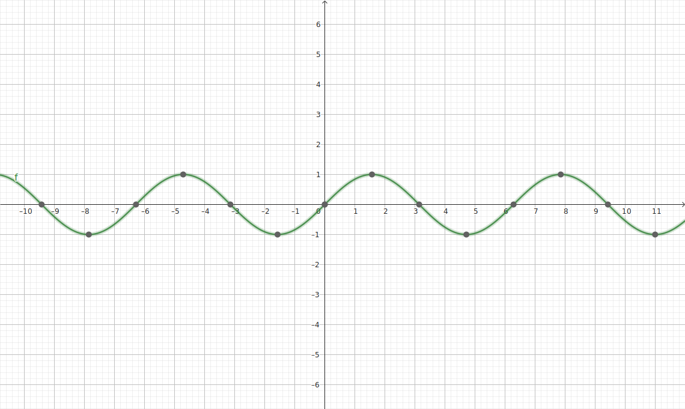

これはsin波です
'... toki jan la, ni li nasin telo, li linja pi telo mama. ali o, ijo ko walo ni li seme?' jan sona li toki tawa
jan mute. tenpo sama la, jan sona li pilin e ijo walo kepeken luka. ijo walo li lon sitelen pi mun mute lon sinpin
tomo pimeja. jan Kapana li sewi e luka. jan mute ante li sewi e luka kin. jan Jopan li lukin sewi e luka.
taso, ona li pini, li sewi ala e luka. tenpo pini la, ona li lukin e lipu, li sona e ni: ni li mun mute. taso, tenpo
lili ni lon tomo sona la, ona li pilin lape, li jo ala e tenpo e lipu. ona li pilin e ni: ona li sona ala e ali.
'... toki jan la, ni li nasin telo, li linja pi telo mama. ali o, ijo ko walo ni li seme?' jan sona li toki tawa jan mute. tenpo sama la, jan sona li pilin e ijo walo kepeken luka. ijo walo li lon sitelen pi mun mute lon sinpin tomo pimeja. jan Kapana li sewi e luka. jan mute ante li sewi e luka kin. jan Jopan li lukin sewi e luka. taso, ona li pini, li sewi ala e luka. tenpo pini la, ona li lukin e lipu, li sona e ni: ni li mun mute. taso, tenpo lili ni lon tomo sona la, ona li pilin lape, li jo ala e tenpo e lipu. ona li pilin e ni: ona li sona ala e ali.
strongタグを使用して、文字を太くしています。
bタグを使用して、文字を太くしています。
ここでconsole.log("hello世界")を実行しましょう。
| 左上端 | 上中央 | 右上端 |
|---|---|---|
| 左中端 | 中中央 | 右中端 |
| 左下端 | 下中央 | 右下端 |
| 左上端 | 上中央 | 右上端 |
| 左中端 | 中中央 | 右中端 |
| 左下端 | 下中央 | 右下端 |
| math |
|---|
| $ \pi*r^2 $ |
| $ \pi*r^2 $ |
| $ \pi*r^2 $ |
| $ \pi*r^2 $ |